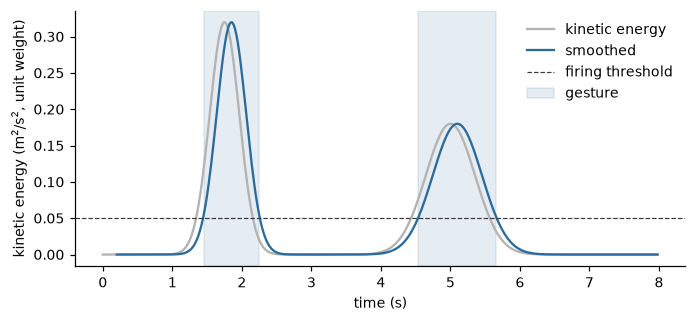

Gesture segmentation#
A movement recorded over seconds or minutes is a stream of samples, but it is perceived and described as a sequence of units: a wave, a step, a strike, separated by moments of stillness. To say how long a gesture lasted, how energetic it was or how smooth, the stream must first be cut into gestures. Segmentation is therefore the step that takes a movement from the low-level layer, where there is one value for each sample, to the mid-level layer, where there is one value for each movement unit (Conceptual framework).
The family has three features. GestureSegmenter finds the start and the end of the gestures
in an intensity signal. MotionDuration measures how long the phases of motion and of pause
last, from the output of the segmenter. ScalarPeakDetector finds the peaks of a
signal, which locate events inside a gesture or between gestures. The symbols are those of Notation, units and conventions.
A threshold on the intensity of motion#
The approach of the library is the simplest one that works for a body in motion: a gesture is a period in which the body
moves enough. The intensity \(I(n)\) is a scalar that measures how much the body moves at sample \(n\), such as the kinetic
energy of a skeleton (KineticEnergy, Kinematics and energy) or the quantity of motion
of a video. The intensity is noisy, so it is first smoothed to \(\bar{I}(n)\), and a gesture is declared while the smoothed
intensity is at least a threshold \(\theta\):
A gesture starts on the first sample at which the smoothed intensity reaches \(\theta\), provided that the optional noise flag is not set, and ends on the first sample at which it falls below \(\theta\). Once a gesture has started, the noise flag has no effect on its end. Between two gestures the body is in a pause.
The smoothing of GestureSegmenter is a Savitzky-Golay filter [citation needed]
(Savitzky and Golay) of polynomial order 3, applied to the last 10 samples with a window of filter_window_length
samples. This must be odd and shorter than the series of 10: 5, 7 or 9, the default being 9 (the window of 15 samples of
the original EyesWeb block cannot be used with a series of 10, so the default is 9 here). The smoothing delays the
detection by a few samples, and the filter needs 10 samples before it can produce a value: the status is WARMING_UP for the
first 10 samples and OK afterwards. A change of filter_window_length restarts the filter, and firing_threshold can be
changed at any time. The threshold is in the unit of the intensity: for a kinetic energy, the squared unit of length per
squared second (and the weights).
The outputs are smoothed_intensity (the filtered intensity, in the unit of the input), is_gesturing (true while a gesture
is running), and is_gesture_start and is_gesture_end, true on the sample that opens or closes a gesture. A value that is
not finite, in the intensity or in the flag, gives INVALID_INPUT.
The noise flag#
A skeleton tracker may lose a joint, and the speed of a joint that jumps about at random gives an intensity that looks like a
gesture and is not. The noise input is a second stream, one flag for each sample, that is true while the motion is judged to
be noise, and while it is set no gesture can start. The flag is computed by
MotionNoiseDetector (output is_noisy) on the same frames (Kinematics and energy). With several joints the detector is decided by the
alphabetically last joint name: this is the behaviour of the underlying EyesWeb block, and only one joint decides.
Without a flag the feature segments any one-dimensional signal. The call is process(intensity, noise=False, *, timestamp=None)
and run(intensity, noise=None, *, timestamps=None).
Duration of motion and pause#
The duration of the gestures and of the pauses between them is itself a quantity of expressive movement: a calm and a tense
movement differ in the length of their pauses, and a rhythm is made of durations.
MotionDuration takes the segmentation signal, one scalar for each sample, typically the
is_gesturing output of the segmenter. A sample is motion when the signal is not zero and a pause when it is zero,
and the length of a phase is reported when the phase ends, on the first sample of the next one: a motion duration when a
pause begins and a pause duration when a motion begins. The phase that is running when the first sample arrives is counted
from that sample, whether or not it began earlier.
The durations are in seconds when a sampling_rate is given and in frames without one. By default a call produces an output
only on the sample that ends a phase, and the others have status NO_OUTPUT; with continuous_output=True every call gives
both durations, those of the last completed motion and pause phases (0 until a phase of that kind has ended). The outputs
are motion_duration and pause_duration.
Peaks of a signal#
A gesture often contains events: the moment of maximum speed, the stroke of a beat. ScalarPeakDetector
keeps a buffer of the last window samples (5 by default) of a scalar signal and reports a peak when the buffered signal shows a fall after
a rise, each larger than threshold: the threshold is a swing (the largest minus the smallest value of the buffer), not a level,
and only maxima are reported, not minima. The output is is_peak, true on the sample at which the peak is reported, with a delay of up to
window samples after the maximum, once the fall is in the buffer. It is an analysis primitive because it knows
nothing of bodies, and its output, a stream of events, is the input of the measures of regularity and synchronization of
events (Entropy, rarity and periodicity, Synchronization). Corrected in the core: the running maximum was seeded with
the smallest positive number, so a signal that stays at or below 0 never produced a peak.
>>> from pyeyesweb.analysis_primitives import ScalarPeakDetector
>>> detector = ScalarPeakDetector(window=3, threshold=0.5)
>>> [detector.process(value).is_peak for value in [0, 1, 3, 1, 0, 0, 2, 0, 0, 0]]
[False, False, False, False, True, False, False, False, True, False]
The peaks are reported on samples 4 and 8, two samples after the maxima at samples 2 and 6.
From a skeleton to the durations of gestures#
The pipeline is: a skeleton, the kinetic energy of each frame, the segmentation into gestures, and the durations of their phases. The signal of the example is a hand that makes two movements in eight seconds, sampled at 50 Hz: a short, fast one and a longer, slower one, with speeds of bell shape.
>>> from pyeyesweb.low_level import KineticEnergy, MotionNoiseDetector
>>> from pyeyesweb.mid_level import GestureSegmenter, MotionDuration
>>> rate = 50.0
>>> time = np.arange(int(8 * rate)) / rate
>>> bump = lambda centre, width, height: height * np.exp(-0.5 * ((time - centre) / width) ** 2)
>>> speed = bump(1.75, 0.3, 0.8) + bump(5.0, 0.5, 0.6) # m/s, two movements
>>> frames = np.zeros((len(time), 1, 3))
>>> frames[:, 0, 0] = np.cumsum(speed) / rate # the position of one joint, in m
>>> energy = KineticEnergy(labels=["hand"], weights={"hand": 1.0}, sampling_rate=rate).run(frames).kinetic_energy
>>> noisy = MotionNoiseDetector(labels=["hand"], sampling_rate=rate).run(frames).is_noisy
>>> segmenter = GestureSegmenter(firing_threshold=0.05)
>>> record = segmenter.run(energy, noisy)
>>> starts, ends = np.flatnonzero(record.is_gesture_start), np.flatnonzero(record.is_gesture_end)
>>> time[starts], time[ends]
(array([1.46, 4.54]), array([2.26, 5.68]))
>>> durations = MotionDuration(sampling_rate=rate).run(record.is_gesturing.astype(float))
>>> durations.motion_duration[~np.isnan(durations.motion_duration)]
array([0.8 , 1.14])
>>> durations.pause_duration[~np.isnan(durations.pause_duration)]
array([1.46, 2.28])
The two gestures start at 1.46 s and 4.54 s and end at 2.26 s and 5.68 s, and last 0.80 s and 1.14 s. The pauses before them are 1.46 s (counted from the first sample) and 2.28 s. The segmenter reports the start of the first gesture 0.1 s after the intensity first reached the threshold, at 1.36 s, the delay of the smoothing. The figure shows the intensity, its smoothed version and the gestures.

How to read the outputs#
Feature |
Output |
Unit |
Meaning |
|---|---|---|---|
|
|
unit of the input |
the filtered intensity |
|
none |
true while a gesture is running |
|
|
none |
true on the sample that opens or closes a gesture |
|
|
|
s, or frames without a rate |
length of the last completed phase; 0 or more |
|
|
none |
a peak was found on this sample |
The start of a gesture is reported a few samples after the intensity reaches the threshold, and a duration is reported at the
end of its phase, so these outputs are available after the events they describe, by the delay of the smoothing and, for
durations, the length of the phase. A recording is analysed offline with run, and the event and duration outputs are read
from the recorder; in a stream, the output of each call is acted upon as it arrives.
Practical notes#
The threshold. The firing threshold is the one parameter that matters, and it is set in the unit of the intensity. A low threshold includes the slow beginning and end of the movement, a high one keeps only the energetic part and may split a gesture that has a dip in the middle. In the example, the first gesture lasts from 1.30 s to 2.42 s with a threshold of 0.01 and from 1.66 s to 2.06 s with 0.2. Choose it on a recording of the same body, set-up and units, and compare gestures only with the same threshold.
Units. With a kinetic energy, the threshold depends on the weights and on the unit of length of the data: the same movement in millimetres has an energy \(10^6\) times larger in the squared unit.
The noise flag. Pass the
is_noisyoutput ofMotionNoiseDetectoras the flag. The flag only stops a gesture from starting: a running gesture ends when the smoothed intensity falls below the threshold, whatever the flag.Short pauses. The smoothing makes the segmenter insensitive to dips of the intensity that last a few samples. A shorter filter window (5) follows the intensity more closely than the default of 9.
After segmentation. The segments are the units to which the mid-level features apply: cut the recording at the starts and the ends and compute the smoothness (Smoothness), the impulsivity (Impulsivity and suddenness) or the mean energy of each.
Further reading#
The framework in which segmentation is the step from layer 2 to layer 3: [1]. A related method for the identification of salient moments in motion capture data: [20]. The EyesWeb library from which these blocks come: [2].